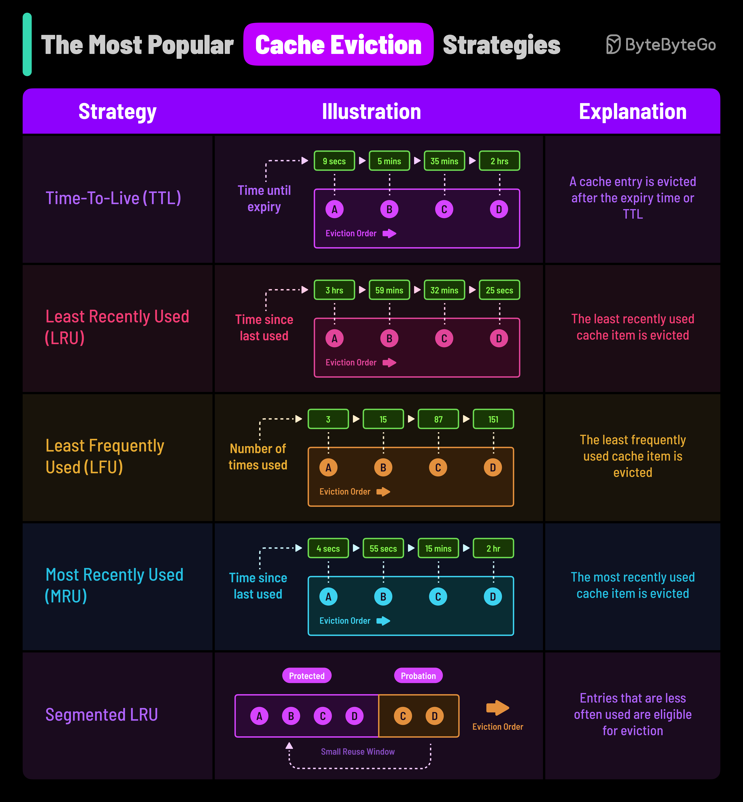

What are the most popular Cache Eviction strategies? And how do they work?
Caching can provide a boost to your application’s performance by storing data in memory for faster access.
But when the cache gets full, you need to evict some data to make room for new stuff.
This is where cache eviction strategies come into play.
The strategy you choose can have a significant impact on your system’s performance, memory usage, and hit rates. Here are five popular strategies to consider:
Items are evicted after a predetermined time period, regardless of access patterns. It’s simple to implement but can lead to premature eviction of frequently used data. TTL is suitable for data that is only valid for a certain period of time such as session information. It is also used as a default fallback strategy.
Evicts the least recently accessed items first. This strategy works well when access patterns exhibit temporal locality, i.e., recently accessed items are likely to be accessed again soon.
Evicts the least frequently accessed items first. Suitable when some items are accessed more often than others, and you want to keep only the most popular items in the cache. However, you also need a mechanism to maintain a count of the number of times an item is accessed.
Evicts the most recently accessed items first. Counterintuitive but useful in specific scenarios like operating system buffer caches, where recently evicted items are unlikely to be needed again soon. Also useful in streaming or batch-processing requirements.
Divides the cache into probationary and protected segments, applying LRU separately to each. Newly added items go into the probationary segment, and frequently accessed items are promoted to the protected segment, shielding them from being evicted too soon.
The best caching strategy depends on the context of your system requirements and constraints. But having a broad understanding of them can help make the right choice.
Over to you: have you used any other cache eviction strategy?